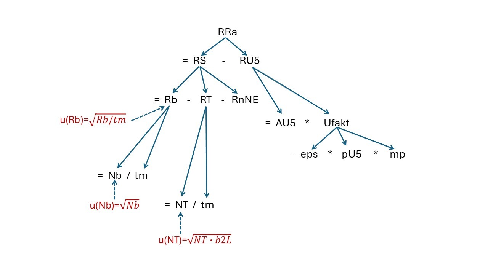

1.3. Gleichungen als Baum-Topologie¶
Bei den analog zum TAB Abschnitt 2.4.2 aufgestellten Gleichungen zur Berechnung des Wertes der Ergebnisgröße handelt es sich um hierarchische Gleichungen. Dabei entsteht eine Liste mit abhängigen Größen (Anzahl nab), denen die Liste der unabhängigen Eingangsgrößen (Anzahl nmu) folgt. Den Größen (Symbole genannt) lassen sich somit Nummern von 1 bis (nab*+*nmu) zuordnen, sie können also anhand der Symbolnummern identifiziert werden. Man kann sich diese Liste wie eine Leiter mit (nab*+*nmu) Stufen vorstellen, oder wie ein Atomkernniveauschema; auf jeder Stufe (Niveau) sitzt ein Größensymbol. Die abhängigen Größen werden mit der ihnen zugeordneten Hilfsgleichung mit anderen Größensymbolen weiter unten in dieser Leiter verknüpft. Verbindet man die derart verknüpften Symbole mit Linien, entsteht eine Baumstruktur, vergleichbar den bekannten Übergängen in einem Atomkernniveauschema. Die Folge der Verbindungslinien von der abhängigen Größe bis zu den Leiterstufen der unabhängigen Symbole entspricht einer Kaskade im Kernniveauschema.
Die folgende Betrachtung ist auf Anwendungen ohne lineare Entfaltung beschränkt.
Solche Symbolkaskaden lassen sich für alle vorkommenden Übergängen (i, j)= i → j zwischen den Symbolen i und j innerhalb einer Kaskade darstellen. Mit Hilfe eines rekursiven numerischen Verfahrens können diese Kaskaden ermittelt werden.
Dieses Verfahren wird dafür genutzt, um für die zur Ergebnisgröße proportionalen Nettozählrate Rn herauszufinden, aus welchen Zählratenbeiträgen Ri sie sich zusammensetzt. Die Zählraten Ri haben überdies zwei zusätzliche Eigenschaften:
a square-root-based uncertainty function like sqrt(Ri/ti) can be attributed to them, or,
they may be based on count numbers Ni, also being associated with uncertainty formulae like (sqrt(Ni)), or for which special distribution types are declared, e.g., the gamma distribution („x+1“) or a Poisson/binomial distribution.
Durch Ausnutzung dieser zusätzlichen Eigenschaften (weiter unten „rules” genannt) können in den meisten Fällen diejenigen Symbole identifiziert werden, die eine Impulsanzahl repräsentieren und mit welchem Messdauersymbol sie verknüpft sind. Damit wird dann durch einen Schritt nach oben in der betreffenden Kaskade die dazugehörige Zählrate Ri*=*Ni / ti gefunden.
Kennt man den Zusammenhang zwischen der Bruttozählrate Rg, der Bruttoimpulsanzahl Ng und der Zähldauer tg sowie deren Symbolnummern innerhalb einer Kette, so kann man zur Ableitung von Erkennungsgrenze und Nachweisgrenze aus der zugehörigen Änderung von Ng nach \(\tilde{N}g\) eine entsprechende Änderung von Rg nach \(\tilde{R}g\) erzeugen. Zur Vereinfachung dieses Schrittes werden in UncertRadio Indexfelder erzeugt, die von einer Zählrate auf die Impulsanzahl und die Zähldauer verweisen und umgekehrt. Dies erfordert allerdings, dass in den Gleichungen nicht nur Zählraten Ri allein angewendet werden, sondern dass sie explizit durch Ri=Ni/ti definiert werden. Daraus ergibt sich die Empfehlung, dies bei der Arbeit mit UncertRadio anzuwenden.
Example Ra226_U235-at-186keV_EN.txp:
Equations (nab=8, nmu=10):
Formeltext=
1 : cRa = Phi * RRa
2 : Phi = 1. / (eps * pRA * mp)
3 : RRa = RS - RU5
4 : RS = Rb - RT - RnNE
5 : RU5 = AU5 * Ufakt
6 : Ufakt = eps * pU5 * mp
7 : Rg = Ng / tm
8 : RT = NT / tm

Tabelle der Übergänge i → j:
nd i j Symb(i) Symb(j)
-----------------------
1 3 4 RRa RS
2 3 5 RRa RU5
3 4 7 RS Rg
4 4 8 RS RT
5 4 12 RS RnNE
6 5 13 RU5 AU5
7 5 6 RU5 Ufakt
8 6 9 Ufakt eps
9 6 14 Ufakt pU5
10 6 11 Ufakt mp
11 7 15 Rg Ng
12 7 16 Rg tm
13 8 17 RT NT
14 8 16 RT tm
Tabelle der Kaskaden (chain) und drei identifiziete Zählraten, die zur Nettozählrate gehören
nc i j kcnt ktime krate rule Symbol chain
------------------------------------------------
1 7 15 15 15 7 A5 Rg 3 4 7 15
2 7 16 0 0 0 3 4 7 16
3 8 17 17 17 8 A3 RT 3 4 8 17
4 8 16 0 0 0 3 4 8 16
5 4 12 0 0 12 A6 RnNE 3 4 12
6 5 13 0 0 0 3 5 13
7 6 9 0 0 0 3 5 6 9
8 6 14 0 0 0 3 5 6 14
9 6 11 0 0 0 3 5 6 11
Tabelle der Zuordnungen von Messdauer (iptr_time) und Impulsanzahl (iptr_cnt) zur Zählrate (iptr_rate)
(RnNE ist nur als Nettozählrate der Nulleffektmessung definiert)
i iptr_time iptr_cnt iptr_rate Symbol
---------------------------------------
7 16 15 7 Rb
8 16 17 8 RT
12 0 0 0 RnNE
Unter den zu UncertRadio gehörenden Beispielprojekten sind zwei, bei denen mit dem oben skizzierten Algorithmus die Bruttozählrate und die Nulleffektzählrate je zweimal gefunden werden:
BSH_total-gamma_var2_EN.txp
DWD_sr89_sr90_TDCR_Verfahren_DE.txp
Im ersten Beispiel führt dieser Befund zur Einsicht, dass die Gleichungen der Nettozählrate nicht weit genug zusammengefasst wurden. Tatsächlich kann man die Gleichungen dieses Beispiels algebraisch so weit umformen, dass daraus die Gleichungen des Beispiels BSH_Gesamt-Gamma_var1_DE.txp werden.
Im zweiten genannten Beispiel ist die Gleichung für Rn_s für die Berechnung der Sr-90-Aktivität so komplex, dass R0_s und R0_c jeweils zweimal darin vorkommen, und zwar auch in nicht-linearer Form.
Bemerkung
[Hinweis]: Bei der Batch-Auswertung von Projekten wird zusätzlich eine Datei fort.64 angelegt, die für jedes Projekt (ohne lineare Entfaltung) in Kurzform die identifizierten Zählratenbeiträge zur Nettozählrate aufführt. Diese Option ist inzwischen deaktiviert.
Hinweis
Das obige Beispiel zeigt, dass die Bruttozählrate Rg in der Liste der zur Nettozählrate beitragenden Zählraten die erste ist. Dieses Merkmal wird intern zur Prüfung benutzt, ob im TAB „Gleichungen” das richtige Symbol für die Bruttozählrate selektiert wurde, denn die Bruttozählrate ist immer die erste der Zählraten im Ausdruck für die Nettozählrate.